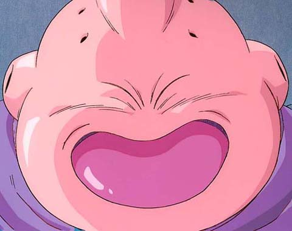

Forums galactiques > Taverne galactique : lieu de discussion informel > Général Louis
Sa mort, car il soul trop | 14 | |
On le laisse détruire la taverne | 2 | |
On le menace | 0 | |
On lui parle | 8 | |
On le HA sa ptite tête de piaf | 7 | |
Je m'en fiche | 14 | |
Total : 45 vote(s) | ||
Pages : 1 2
| Salibe Réputation à la taverne : 367  06/04 ETU 16:17 | Score : 0 Détails Il en va de même pour vous neo sound, encore une remarque de ce genre et une croisade mettra fin à votre stupidité.
Même chose : pas de deuxième avertissement. | ||
| Cesco Imperator Réputation à la taverne : 3122  06/04 ETU 16:22  | Score : 0 Détails Ca, c'est votre appréciation, Neo Sound, totalement subjective.
Et je vous prie d'arrêter, avec toute l'amicale courtoisie que j'éprouve, toute tentative d'agression physique et verbale de Louis. S'il vous insupporte, oubliez le et ne le lisez pas. Si vous l'attaquez, beaucoup prendront sa défense, et je ne crois pas qu'Espérance soit prête à encaisser de nouveaux conflits armés pour l'instant. | ||
| Parisii Réputation à la taverne : 1721  06/04 ETU 16:25 | Score : 0 Détails Bien que j'ai prévenu le général Louis que je ne le défendrais plus (cf marché galactique), je me joins aux dires de Salibe, et l'aiderai dans cette tache non pas parce qu'il ne saurait pas en venir à bout seul, mais parce que je partage ses idées.
Mon énervement monte en général vite, mais redescend souvent encore plus vite. Ma déception elle est tenace. Eshemir et neo sound veuillez s'il vous plait vous calmer. | ||
| Wolverine Réputation à la taverne : 2271  06/04 ETU 16:44 | Score : 0 Détails neo sound vient nous les briser ici ? C'est pas possible ! Il s'est viré de partout et ne change rien à ses habitudes de chiottes !!!!
Si j'le trouve, j'en fais de la pâté pour chat ... Y en a marre des boulets malpolis ... NEOSOUND ECRASE ! | ||
| Général_Louis Réputation à la taverne : 1323  06/04 ETU 18:30 | Score : 0 Détails Merci pour votre aide j'en ai besoin car Eshemir depuis un moment s'acharne sur moi avec tout ses pseudos.
Il a besoin d'un souffre douleur ou quoi -_-. | ||
| Agarash Réputation à la taverne : 136  06/04 ETU 18:51 | Score : 0 Détails eshemir tu gave trop la
général-louis je te donne 1000 porte nerf pour t'aider si tu veux y'en a marre la ! | ||
| martinez11 Réputation à la taverne : 269  06/04 ETU 19:16 | Score : 0 Détails Je rejoind vos avis.
Je trouve Eshemir beaucoup plus gavant que Louis. C'est con de s'acharner sur lui comme sa. Et Louis lui il ne le fait pas exprès, c'est ce qui est drole. | ||
| Eshemir Réputation à la taverne : 151  06/04 ETU 21:52 | Score : 0 Détails Je préfère l'humour Ghozérien sa c'est drôle
| ||
| Buu Réputation à la taverne : 0  06/04 ETU 21:53 | Score : 0 Détails Bonsoir, heu... qui c'est le méchant qui embête?
| ||
| Général_Louis Réputation à la taverne : 1323 07/04 ETU 09:15 | Score : 0 Détails C'est Eshemir le méchant qui embête.
Purée Eshemir je ne te savais pas aussi boulet et peu humouristique. Je propose à tout le monde de mettre fin à ce commandant stupide. Je fourni à tout ceux qui me soutiennent un rapport d'espionnage complet sur Eshemir. | ||
| Xsan Réputation à la taverne : 21  07/04 ETU 12:08 | Score : 0 Détails Oui bon ben n'en rajoute pas trop quand meme ... Sinon tu vas pas etre soutenu bien longtemps.
On cherche pas un mechant et un gentil. Chacun a ses qualités et ses defauts, et il faut essayer de les accepter. Mais ca n'empeche pas que tout le monde doit essayer de s'ameliorer. Donc General Louis, si je pouvais te donner un conseil, ca serait de tourner 7 fois ta langue dans ta bouche avant de parler. | ||
| Général_Louis Réputation à la taverne : 1323 07/04 ETU 13:45 | Score : 0 Détails Hein? Je n'ai que faire de ce que vous dites car la c'est une INSULTE!
Me dire de tourner 7 fois la langue dans la bouche avant de parler? Pff montrez l'exemple et excusez-vous car là je n'aime guère que l'on me dise ça quand on n'est pas très vieux dans cette galaxie. | ||
| Sullïwan Réputation à la taverne : 1097  07/04 ETU 13:48 | Score : 0 Détails La réaction de Xsan était tout à fait adaptée, par contre la votre, Louis,...
Désirez-vous réelement vous mettre à nouveau la galaxie à dos ? Arrêtez un peu de chercher les ennuis et réfléchissez avant de parler. | ||
| Anko Réputation à la taverne : 717  07/04 ETU 13:50 | Score : 0 Détails Rappelons qu'un collectif de Défense pour Louis a été crée.
Il s'agit donc d'une espèce protégée! | ||
| Général_Louis Réputation à la taverne : 1323 07/04 ETU 13:56 | Score : 0 Détails QUi est une espèce protéger?
Sinon pour sulliwan: Oui je suis un peu d'accord avec Xsan, mais il aurait pu le dire moins directement car la je le prends un peu mal, il a dit ça comme une insulte. Je le pardonne mais bon. Général_Louis | ||
| Xsan Réputation à la taverne : 21 07/04 ETU 14:01 | Score : 0 Détails Non ce n'est pas une insulte; et effectivement je suis jeune dans votre galaxie, mais cela n'influe pas sur ma perception et mes idées.
J'ai au moins réussi a te choquer c'est peu être une bonne chose. Ce que je voulais dire par la, c'est qu'il n'y a que très rarement quelqu'un aillant totalement tord, ou totalement raison. A ton avis pourquoi Eshemir a t il crée ce sondage? ...Parce qu'il ne t'aime pas... Pourquoi ne t'aime t il pas? ...Parce que tu l'enerves... Et pourquoi tu l'enerves? A toi de faire travailler ton esprit pour comprendre le comportement des gens autour de toi. Quand je parlais de tourner ta langue dans ta bouche, ca veut dire, reflechi a ce que tu dis, et aux conséquences de tes paroles. Que vont ils penser? Que vont ils dire? ... Pour prendre l'exemple du message que j'ai critiqué. Tu ne crois pas que tu ne fais qu'attiser la haine que tu inspires a Eshemir. Et en plus de ca tu as une vision super simpliste, le bien et le mal... Il faut se remettre en cause parfois, et essayer de comprendre pourquoi on s'attire la colere d'une ou plusieurs personnes. Je te rappelle que j'ai voté au sondage "on lui parle". Ca veut dire justement ne pas ignorer certains de tes messages, mais plutot essayer de te faire progresser, pour que tu deviennes un joueur apprécié. Voila j'espere que tu m'auras compris. Sans rancune j'espere ! | ||
| Général_Louis Réputation à la taverne : 1323 07/04 ETU 14:03 | Score : 0 Détails Oui j'ia compris.
Evidement sans rancune. |
Pages : 1 2
Forums galactiques > Taverne galactique : lieu de discussion informel > Général Louis